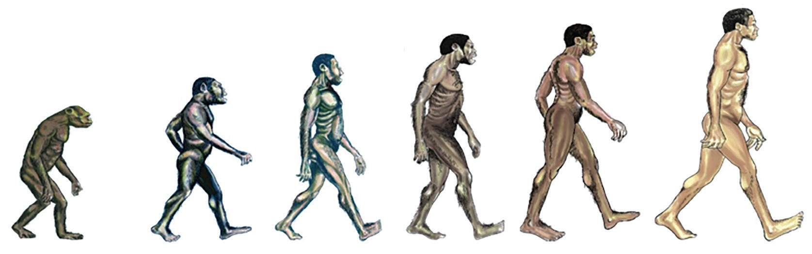

Homo habilis: This lived approximately between 2.5 and 1.6 million years ago.
They were the first human beings able to make and use tools. That is why they were nicknamed the “handyman.” Fossil evidence for Homo habilis has been found at Olduvai Gorge in Tanzania, Koobi Fora in Kenya and Sterkfontein in South Africa.
Homo erectus: This lived between 1.9 million and 300,000 years ago.
They were the first to make advanced stone tools called hand axes due to their more advanced brain size than Homo habilis.
Homo erectus was the first human to learn how to make and use fire for roasting meat and creating warmth.
Fire also enabled them to migrate from Africa and live in other parts of the world.
In this case, Homo erectus was the first human to move out of Africa into Asia and Europe.
That is why the fossils of Homo erectus are also found in Europe and Asia.
Fossil evidence for Homo erectus has been found at Olduvai Gorge in Tanzania, Koobi Fora in Kenya, Zhoukoudian in China and Dmanisi in Georgia.
Homo sapiens: Homo sapiens lived approximately between 400,000 and 70,000 years ago.
Some of the sites in Africa where the fossils of Homo sapiens have been found include Laetoli, near Lake Eyasi and Lake Ndutu in Tanzania; Bodo in Ethiopia; Broken Hill in Zambia; Taung Cave in South Africa; Tangiers in Morocco; and Taramsa in Egypt. Examples of sites outside Africa include the Tabun cave in Israel, Krapina in Croatia and Saccopastore in Italy.Homo sapiens sapiens: These were the immediate evolutionary ancestors of modern human beings.
Their fossil remains are spread all over the world. They date approximately between 150,000 and 20,000 years ago. They had relatively larger brain size than that of Homo sapiens. The fossils of these modern humans were found in Nasera and Mumba rock-shelter in Arusha, Tanzania; Middle Awash in Ethiopia; and Border Cave and Klasies River Mouth Cave in South Africa. Figure 2.1 shows the stages of human evolution from Ardipithecus to Homo sapiens sapiens.
Ardipithecus, Australopithecus, Homo habilis, Homo erectus, Homo sapiens and Homo sapiens sapiens
Figure 2.1 Stages of human evolution
HISTORY TEXTBOOK FORM ONE.indd 27
06/12/2024 13:09:27